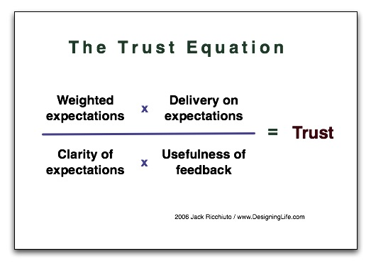

Confianza y Anarquía
Interacción directa con el usuario, generación de confianza, anarquía, las claves de esta charla de Fred George en infoq, que les recomiendo: http://www.infoq.com/presentations/Leaner-Programmer-Anarchy
Por razones totalmente accidentales, estoy en medio de un proceso de anarquía con uno de mis equipos. No hay un “jefe de proyectos” a cargo de este equipo de 4 desarrolladores. En estos momentos dependen directamente de mí, pero están trabajando literalmente sin un administrador.
Cometemos muchas de las herejías que propone Fred George, y no porque seamos super modernos y estemos experimentando con lean o metodologías post ágiles, simplemente tenemos que sacar las tareas adelante. Y lo interesante, que he observado que la confianza en la capacidad de este equipo ha aumentado, principalmente de nuestros clientes internos.

La siguiente es una descripción resumida de lo que estamos haciendo:
-
No hay sprints, ni kanban board, pero usamos Jira para registrar lo que debemos hacer y saber quien está en qué. No hay standup meetings, ni historias de usuario, ni estimaciones, ni siquiera reuniones de coordinación.
-
Ellos toman sus decisiones, son autónomos, me mantienen informado, pero no hay barreras burocráticas. Acuden a mi para que destrabe alguna situación que impide realizar el trabajo. Mi rol es de facilitar y comprometer a las otras áreas para cumplir con las entregas.
-
La única barrera burocrática importante está con los pasos a producción.
-
El concepto de QA es difuso, no hay un equipo de QA, el usuario final está probando sobre el ambiente de desarrollo las nuevas características y entrega un feed back inmediato. El paso por el ambiente de QA es casi un trámite formal, un paso para homologar ambiente (lo que cuestiona mucho de los procedimientos internos, pero esa pelea he decidido postergarla).
-
Aumentamos la interacción usuario final con el desarrollador, los desarrolladores pasan mucho tiempo sentado con el usuario estudiando el problema, y proponiendo soluciones que incluso el mismo usuario no visualizaba.
-
El desarrollador es: analista funcional, arquitecto, diseñador y programador.
-
Compromisos de fechas, entregamos cuando nos comprometemos.
-
Peor es mejor, lo entregado normalmente es menos del 100% pero es usable.
Hemos logrado aumentar la confianza, eso es lo que más me ha sorprendido. Los usuarios sienten que están obteniendo por fin aplicaciones que se ajustan más a lo que necesitaban.
Un ejemplo, una aplicación tenía especificado que se debía “cargar archivos mediante un botón”, la implementación que llevaba más de un año en producción, hacía eso, pero sólo permitía cargar un archivo a la vez, y mientras se cargaba el archivo el usuario quedaba imposibilitado de hacer otras cosas. En realidad lo que los usuarios necesitaban era programar una serie de múltiples cargas, el desarrollador al sentarse con el usuario y ver lo que hacían comprendió el grave problema de usabilidad de la aplicación tal como estaba, el resultado fue que en el siguiente release, le llevaron, como sorpresa, una interfaz mejorada, que dejaba libre al usuario para poder realizar otras cosas con su computador (el usuario nunca pidió esa mejora, fue ofrecida “gratuitamente” por el desarrollador).
El gran problema de las metodologías más pesadas es que entre usuario y desarrollador hay muchas barreras: Usuario Final -> Jefe -> StakeHolder -> Sponser -> Jefe de Proyecto -> Analista Funcional -> Diseñador -> Arquitecto -> Programador.

Cambio en las decisiones de negocios según Fred George
La interacción debe ser Usuario Final <-> Desarrollador, eso aumenta el entendimiento, la comunicación del problema y la confianza. Finalmente, emerge esta interacción: Usuario Final <- Desarrollador, es el desarrollador quien termina ofreciendo nuevas características al usuario final.
Cosas que me gustan de la presentación de Fred George, y que en cierto modo he transmitido en este blog:
-
Se necesitan resultados, no explicaciones, ni buscar culpables. Este pensamiento elimina las estimaciones, retrospectivas, iteraciones, y todo ese “waste” que terminan generando las metodologías ágiles.
-
Los standups meeting y las historias se pueden reemplazar con una mayor interacción con el usuario.
-
Menos roles, colapsar todas esas funciones en una sola: desarrollador, hasta el administrador desaparece. Finalmente lo que necesitamos es contratar buenos programadores.

Buenas Prácticas Agiles no usadas
El valor de generar confianza entre el desarrollador y el usuario es, finalmente, la gran enseñanza de esta experiencia, y lo que transmite Fred George en su charla. Les reitero la invitación a verla, y ha estudiar sus herejías, y ponerlas en práctica.
Un lector cínico podrá criticarme y decir que en realidad no estoy haciendo gestión y esta anarquía terminará pasándome la cuenta, la verdad es que nunca he planeado seguir esta estrategia, siempre he trabajado así :), soy un anarquista convencido, y mi experiencia me ha mostrado que se pueden sacar adelante muchos proyectos de este modo. Lo que pasa es que la gente se pone nerviosa cuando no hay estructura, planificación y todo eso, sobretodo los ingenieros, que son los más nerviosos. No se preocupen tanto y confíen.